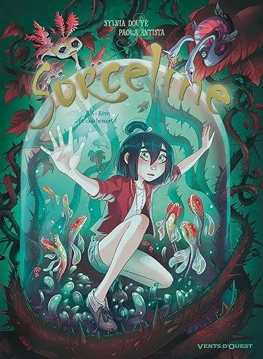
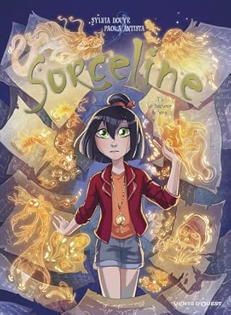
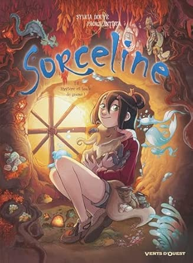
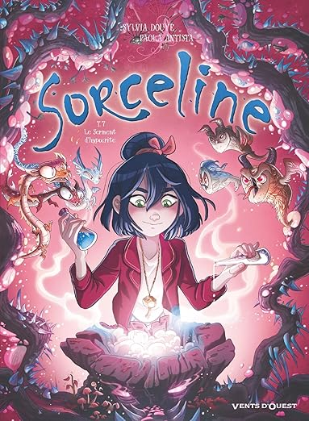
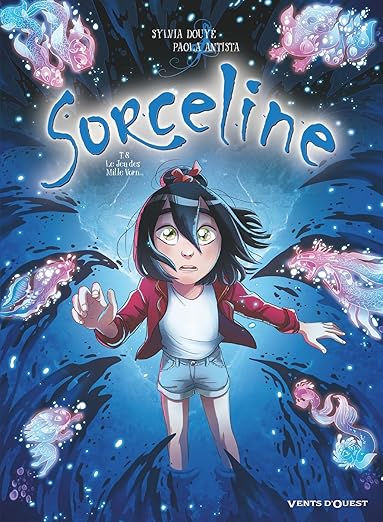

Tome 4: Rêve et cauchemort
Auteur: Sylvia Douyé et Paola Antista
Genre: Fantastique
Année: 2021
Sorceline est en danger ! L’animal fantastique qu’elle est la seule à voir est un augure. Il est dit que la personne devant laquelle il apparait doit bientôt mourir... Plongée dans un profond coma, Sorceline s’accroche tant bien que mal à la vie. Elle ne sait pas qu’un secret la concernant vient d’être révélé. Pourquoi n’en a-t-elle jamais rien su ? Son pouvoir est-il lié à ses origines ? Et surtout, se pourrait-il que Sorceline soit… maléfique ? Les réponses viendront, mais le Professeur Balzar doit avant tout penser à sauver Sorceline. L’école ne connait plus de repos ! D’autant qu’un nouveau stagiaire débarque sur Vorn, que Mérode est toujours coincé en statue de verre, et que les secrets de l’île sont loin de tous être dévoilés…



